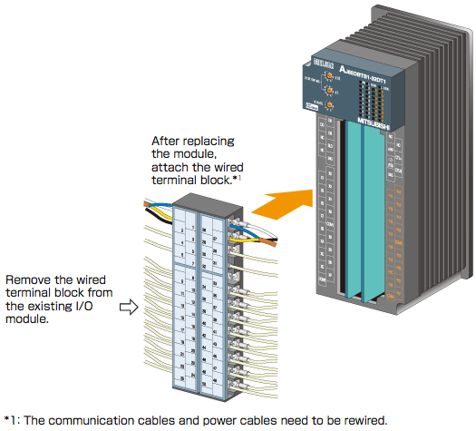

Programmable Controllers MELSEC-A Series Renewal

Replace MELSECNET/MINI-S3 with CC-Link while utilizing the existing wiring
A2C Shape CC-Link Remote I/O Module
Supported series: 
Replace A2CCPU and NET/MINI-S3 I/O module with CC-Link module using the existing NET/MINI-S3 wiring
The simple replacement process helps minimize the upgrade time.
The installation size is the same as that of A2C I/O modules; the existing terminal block can be installed directly.

| Discontinued model | Alternative model | |
|---|---|---|
| Model | Outline | |
| AX41C | AJ65DBTB1-32D | Terminal block type, 24 V DC input, 32 points, positive/negative common shared |
| AX81C | ||
| AY51C | AJ65DBTB1-32T1 | Terminal block type, 0.5 A transistor output, 32 points, sink |
| AX40Y50C | AJ65DBTB1-32DT1 | Terminal block type, 24 V DC input, 16 points, positive common 0.5 A transistor output, 16 points, sink |
| AY13C | AJ65DBTB1-32R | Terminal block type, relay output, 32 points |
| AX40Y10C | AJ65DBTB1-32DR | Terminal block type, 24 V DC input, 16 points, positive/negative common shared, relay output, 16 points |
| AX80Y10C | ||